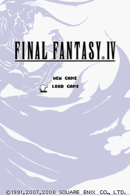

Final Fantasy IV DS

Click for "big" image
Publishing Info
Published by: Square Enix Co., LTD.
Developed by: Matrix Software, Square Enix Co., LTD.
Released: December 20th, 2007
Description
Final Fantasy IV DS is a 3D re-make of the classic original, Super Nintendo RPG game from Square Enix.
You lead a party of 5 at a time, battling monsters through random encounters and the active time battle system, leveling up your cast and progressing the story.
As the story progresses, your characters grow as people, and the tension thickens...
Game Categories
Number of players: 1
Genre: Role-Playing (RPG)
Perspective: Diagonal-down
Art: Anime/Manga
Pacing: Real-time, Turn-based
Setting: Fantasy
Quote
To put it bluntly, Final Fantasy IV for the DS is, first and foremost, a true Final Fantasy game. And by that I mean it still has that impacting feel all the good Final Fantasy games have – this is NOT one of the…lesser ones (I’m looking at you, Final Fantasy XIII). Seriously though, considering all the revamped looks, swiftly altered sounds, somewhat passable voice acting and maintaining the original plot (which made whole generations of gamers appreciate a wonderful love story in a game for the first time), Final Fantasy IV for the DS is a title every fan should dig right in. -- https://www.mobygames.com/game/36654/final-fantasy-iv/user-review/2672494/